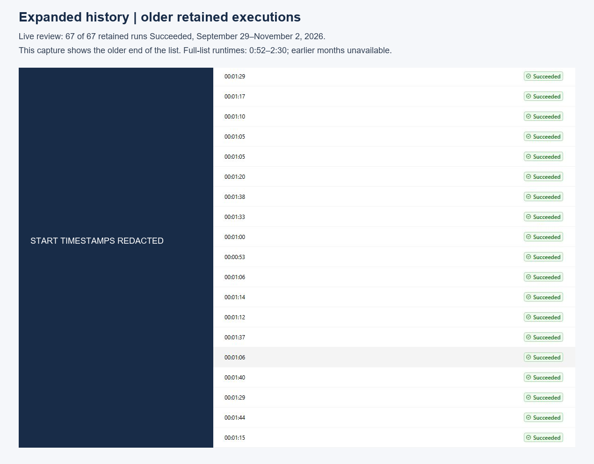
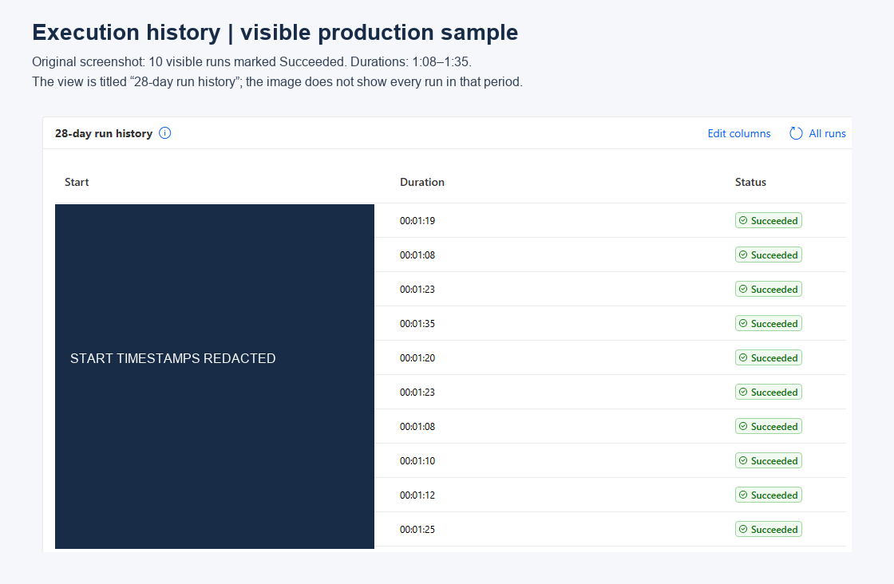
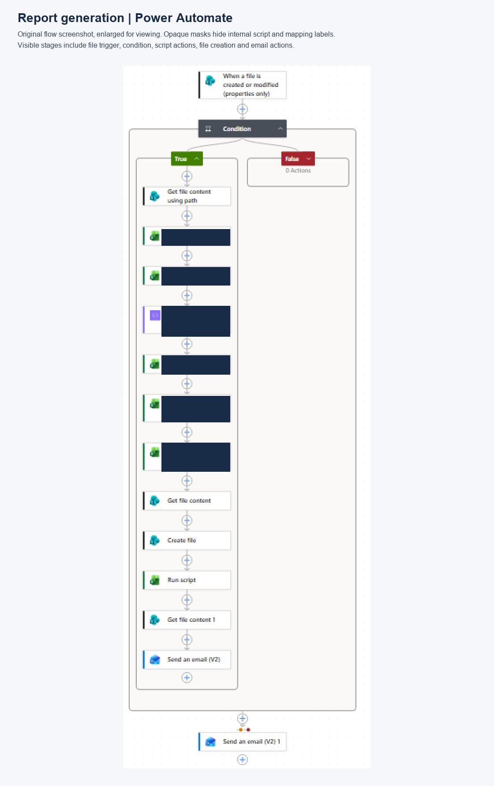
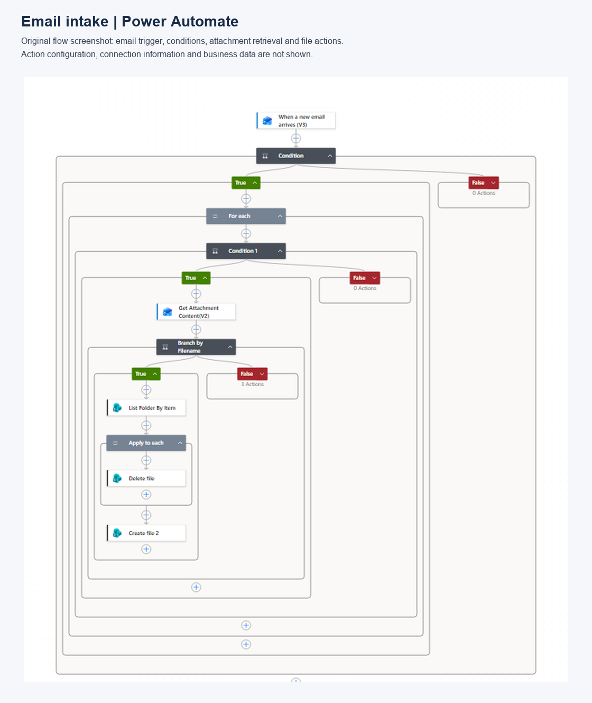
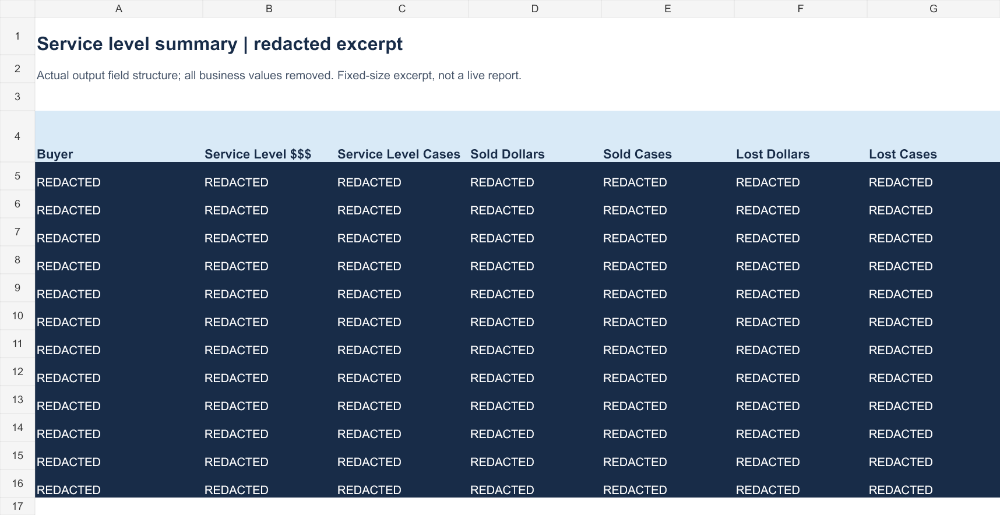
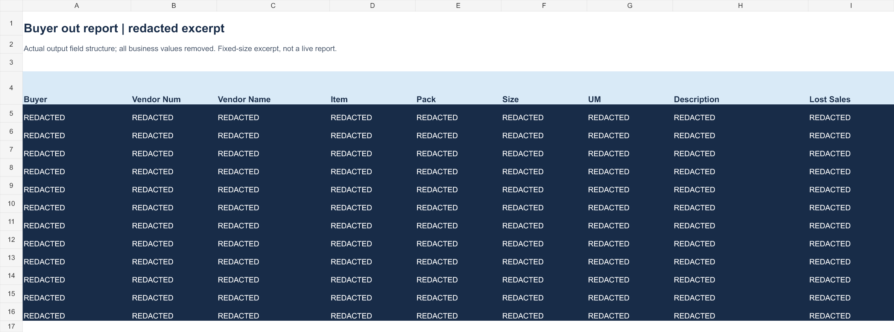

Patrick Greer · Production automation evidence · November 2, 2026Lost-sales reporting automation
Procurement buyers and department leadership use this Power Automate workflow to prepare recurring reports and monitor service exceptions.
~60 minutesPrior manual preparation
Owner estimate
1:08–1:35Observed workflow runtimes
10 visible successful runs
These measures have different boundaries. Runtime is elapsed execution time, not total analyst effort or a measured time-savings percentage.
Expanded reliability review
Live All runs view reviewed November 2: 67 of 67 retained executions marked Succeeded, September 29–November 2, 2026. Runtimes 0:52–2:30. Older history was not exposed.

Execution history
10 visible successful runs. Observed durations 1:08–1:35. Start timestamps redacted. This is a sample in the 28-day history view.

Report generation
Original Power Automate screenshot. Internal script and mapping labels are masked. Source resolution limits detail.

Email intake
Original Power Automate screenshot showing email, conditions, attachments and file actions.

Service level output
Rendered sanitized derivative of the provided workbook. Actual field headings retained; all business values removed.

Buyer detail output
Rendered sanitized derivative. First nine detail columns shown; all 38 headings are available in the sanitized workbook.
